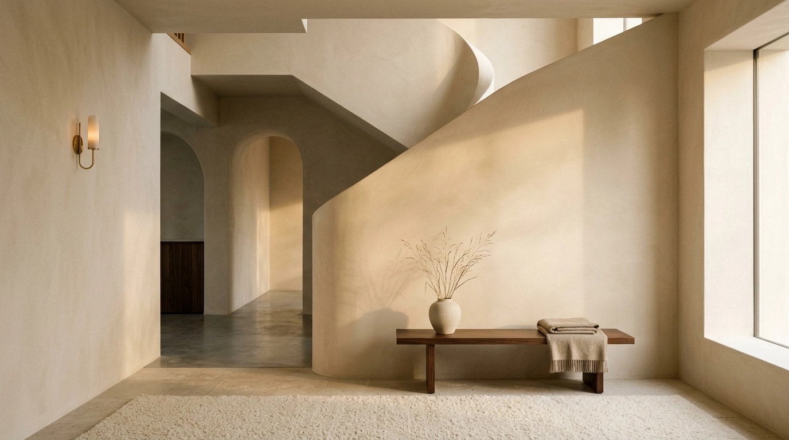
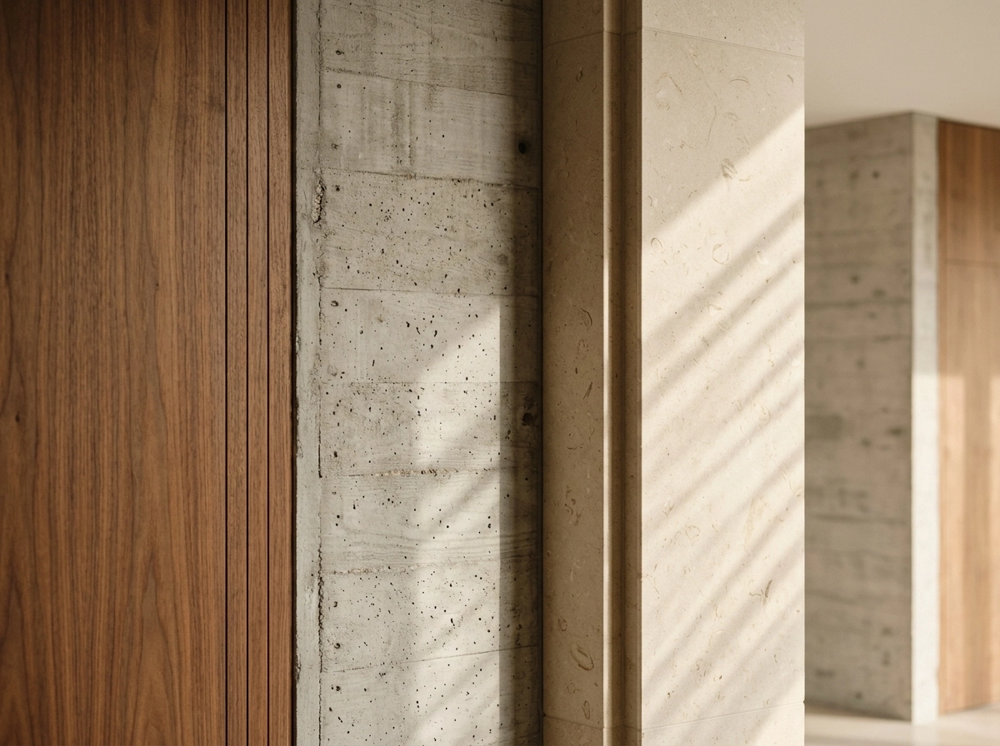
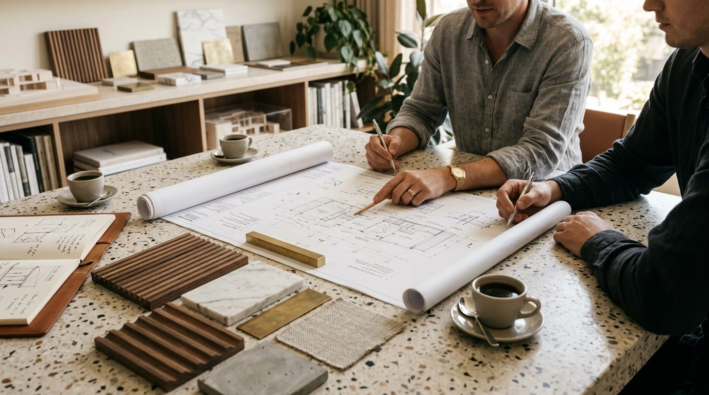

01
Site before studio
Every project begins with an extended site visit. We understand the light, proportion and context before drawing the first line.
Modular Compute Systems
One chassis. Infinite configurations. Precision-engineered infrastructure for teams that build at the edge of what hardware allows.

NODE / NX-07 TELEMETRY
04 / Inside the platform





The Domus was founded in 2014 by Naveen Rao after eight years designing residential interiors for other studios.
He observed a persistent tendency in Indian interior design to equate quality with quantity — more materials, more finishes, more decoration. The Domus was built as a deliberate correction: fewer gestures, better materials, and spaces that feel considered rather than decorated.
The studio's name comes from the Latin word for a private dwelling — a made place shaped around the rituals of everyday life. That idea remains at the centre of every project we take on.
Every project begins with an extended site visit. We understand the light, proportion and context before drawing the first line.
We never specify a material to mimic another. Timber looks like timber; stone looks like stone.
Every bespoke element is made by a named artisan whose workshop and process we know.
We maintain a small number of projects at any given time. Quality requires attention, not speed.
“We begin every project by asking what the space demands — not what the client wants to show.”— Naveen Rao, Principal Designer
Began as a two-person practice in a converted mill house in Byculla, Mumbai.
Recognised by the Indian Institute of Interior Designers for Residence Ferreira, Alibaug.
Second workspace opened to support growing coastal residential commissions.
Extended into boutique hospitality, starting with a nine-room coastal property in North Goa.
Deliberate decision to stop at twelve people — size is a design decision.
A dedicated space for testing plaster, stone and timber finishes before specification.
A small, deliberate team who share a preference for considered work over volume.
Principal Designer
Head of Materials
Project Director
Studio Manager
We accept a limited number of new commissions each year. Reach out early.